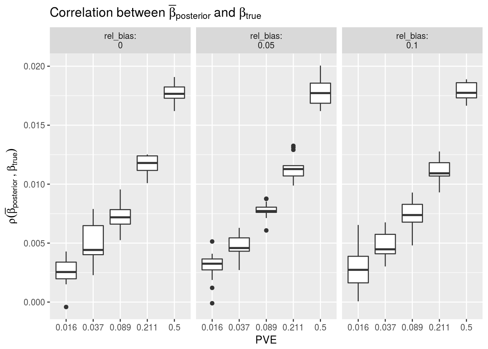

Last updated: 2017-11-16
Code version: 976274d
Simulation was performed using ~700k SNPs across the genome. LD was computed block-wise, with blocks identified by LDetect. Prediction is on held-out samples (from the same LD reference panel, but that were not used in calculation of LD).
Overall,

R version 3.4.2 (2017-09-28)
Platform: x86_64-pc-linux-gnu (64-bit)
Running under: Ubuntu 16.04.3 LTS
Matrix products: default
BLAS/LAPACK: /opt/intel/compilers_and_libraries_2018.0.128/linux/mkl/lib/intel64_lin/libmkl_intel_lp64.so
locale:
[1] LC_CTYPE=en_US.UTF-8 LC_NUMERIC=C
[3] LC_TIME=en_US.UTF-8 LC_COLLATE=en_US.UTF-8
[5] LC_MONETARY=en_US.UTF-8 LC_MESSAGES=en_US.UTF-8
[7] LC_PAPER=en_US.UTF-8 LC_NAME=C
[9] LC_ADDRESS=C LC_TELEPHONE=C
[11] LC_MEASUREMENT=en_US.UTF-8 LC_IDENTIFICATION=C
attached base packages:
[1] stats graphics grDevices utils datasets methods base
other attached packages:
[1] bindrcpp_0.2 dplyr_0.7.4 readr_1.1.1
[4] tidyr_0.7.2 tibble_1.3.4 ggplot2_2.2.1
[7] tidyverse_1.1.1 RcppEigenH5_0.2.0 purrr_0.2.4
[10] rhdf5_2.20.0
loaded via a namespace (and not attached):
[1] Rcpp_0.12.13 cellranger_1.1.0 compiler_3.4.2
[4] git2r_0.19.0 plyr_1.8.4 bindr_0.1
[7] forcats_0.2.0 tools_3.4.2 zlibbioc_1.22.0
[10] digest_0.6.12 lubridate_1.6.0 jsonlite_1.5
[13] evaluate_0.10.1 nlme_3.1-131 gtable_0.2.0
[16] lattice_0.20-35 pkgconfig_2.0.1 rlang_0.1.4
[19] psych_1.7.5 yaml_2.1.14 parallel_3.4.2
[22] haven_1.1.0 xml2_1.1.9000 httr_1.3.1
[25] stringr_1.2.0 knitr_1.17 hms_0.3
[28] tidyselect_0.2.3 rprojroot_1.2 grid_3.4.2
[31] glue_1.2.0 R6_2.2.2 readxl_1.0.0
[34] foreign_0.8-69 rmarkdown_1.7 modelr_0.1.1
[37] reshape2_1.4.2 magrittr_1.5 scales_0.5.0
[40] backports_1.1.0 htmltools_0.3.6 rvest_0.3.2
[43] assertthat_0.2.0 mnormt_1.5-5 h5_0.9.8
[46] colorspace_1.3-2 labeling_0.3 stringi_1.1.5
[49] lazyeval_0.2.1 munsell_0.4.3 RcppParallel_4.3.20
[52] broom_0.4.2 This R Markdown site was created with workflowr